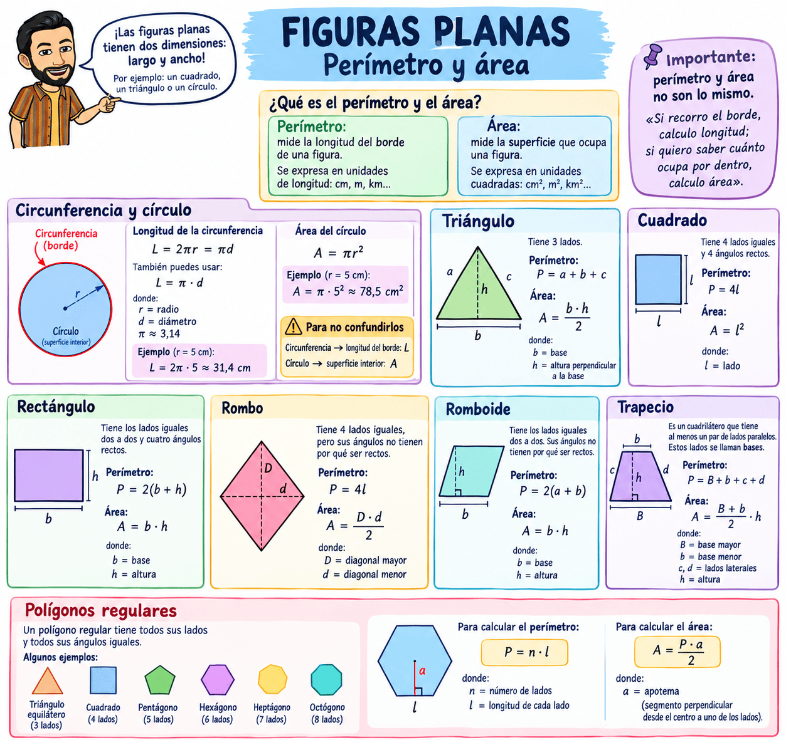
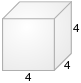
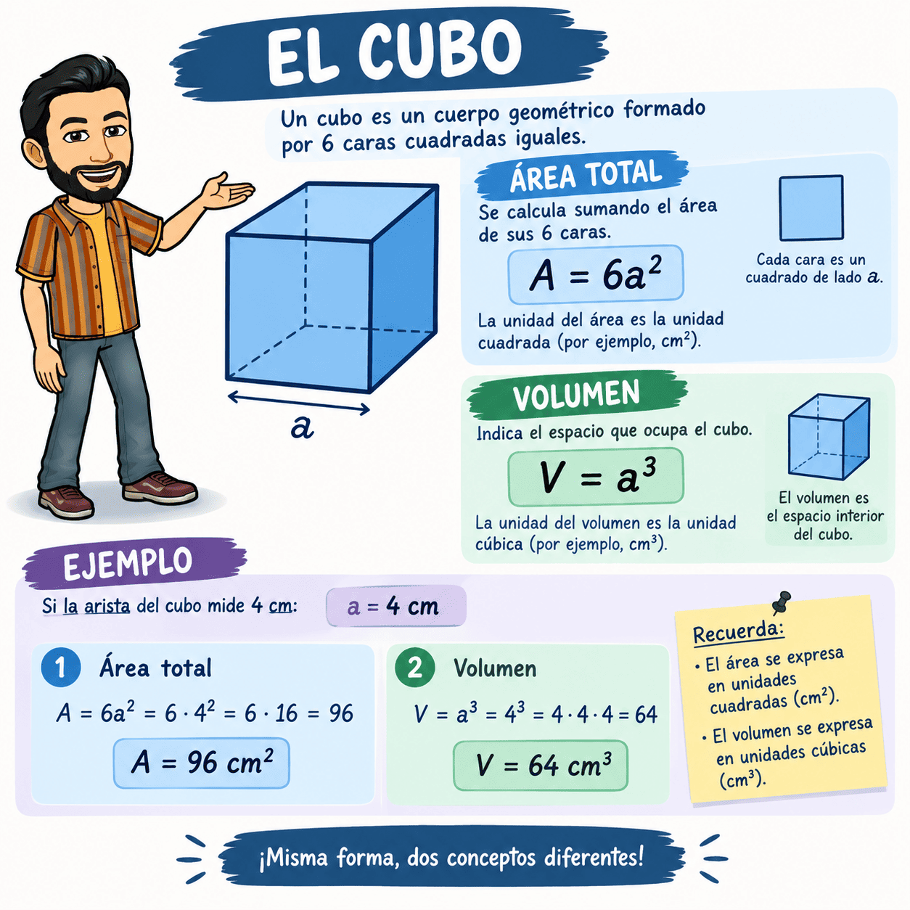
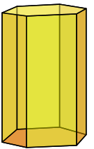
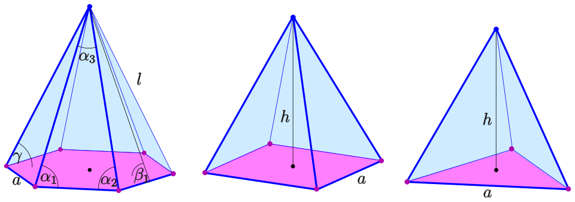
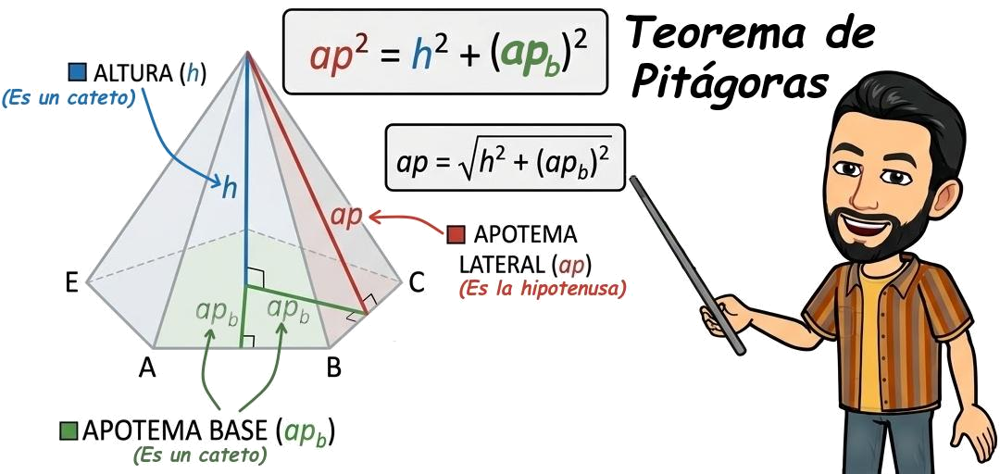
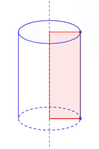
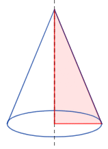
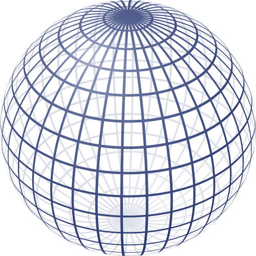
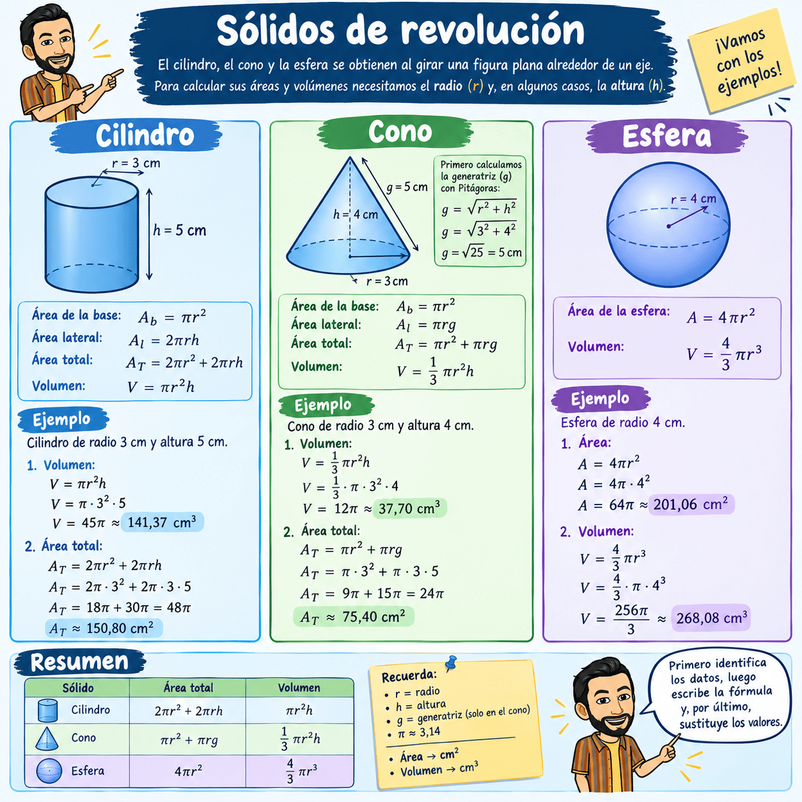

Diferencia entre perímetro, área y volumen
Estos 3 conceptos es esencial tenerlos claros:
- Perímetro: es la longitud del borde de una figura. Se mide en unidades de longitud: cm, m, km…
- Área o superficie: es la cantidad del plano que ocupa una figura plana. Se mide en unidades cuadradas: cm², m², km²…
- Volumen: es la cantidad de espacio que ocupa un cuerpo en 3 dimensiones. Se mide en unidades cúbicas: cm³, m³, km³…
👉 En resumen:
Perímetro → borde 📏 | Área → superficie ▫️ | Volumen → espacio interior 📦
Perímetros y áreas de figuras planas
Las figuras planas son figuras que tienen dos dimensiones: largo y ancho. Por ejemplo, un cuadrado, un triángulo o un círculo.
Cuando trabajamos con figuras planas debemos diferenciar:
- Perímetro: mide la longitud del borde de una figura. Se expresa en unidades de longitud: cm, m, km...
- Área: mide la superficie que ocupa una figura. Se expresa en unidades cuadradas: cm², m², km²...
Importante: perímetro y área no son lo mismo. «Si recorro el borde, calculo longitud; si quiero saber cuánto ocupa por dentro, calculo área».
Circunferencia y círculo
- Circunferencia: es la línea curva cerrada que forma el borde.
- Círculo: es la superficie que queda dentro de la circunferencia.
Longitud de la circunferencia
La longitud de una circunferencia se calcula con:
\( L=2 · \pi · r\)
También podemos utilizar:
\( L=\pi · d \)
donde:
- \(r\) = radio.
- \(d\) = diámetro.
- \(\pi \approx 3'14\).
Recuerda que \(d=2r\).
Ejemplo: si una circunferencia tiene un radio de 5 cm:
\( L=2\cdot\pi\cdot5=10\pi\approx31'4\text{ cm} \)
Área del círculo
Para calcular la superficie del círculo utilizamos:
\( A=\pi · r^2\)
Ejemplo: si el radio es 5 cm:
\( A=\pi\cdot5^2=25\pi\approx78,5\text{ cm}^2 \)
⚠️ Para no confundirlos
- Circunferencia → longitud del borde: \( \boxed{L=2\pi r} \)
- Círculo → superficie interior: \( \boxed{A=\pi r^2} \)
Triángulo
Un triángulo tiene 3 lados.
Para calcular su perímetro sumamos sus tres lados:
\(P=a+b+c\)
Para calcular su área:
\(A=\dfrac{b\cdot h}{2}\)
donde:
- \(b\) = base.
- \(h\) = altura perpendicular a la base.
Cuadrado
Tiene 4 lados iguales y 4 ángulos rectos.
Perímetro:
\(P=4·l\)
Área:
\(A=l^2\)
donde \(l\) es la longitud del lado.
Rectángulo
Tiene los lados iguales dos a dos y cuatro ángulos rectos.
Perímetro:
\(P=2·(b+h)\)
Área:
\(A=b\cdot h\)
donde \(b\) es la base y \(h\) la altura.
Rombo
Tiene 4 lados iguales, pero sus ángulos no tienen por qué ser rectos.
Perímetro:
\(P=4·l\)
Área:
\(A=\dfrac{D\cdot d}{2}\)
donde:
- \(D\) = diagonal mayor.
- \(d\) = diagonal menor.
Romboide
Tiene los lados iguales dos a dos. Sus ángulos no tienen por qué ser rectos.
Perímetro:
\(P=2·(b+l)\)
Área:
\(A=b\cdot h\)
Trapecio
Es un cuadrilátero que tiene al menos un par de lados paralelos. Estos lados se llaman bases.
El perímetro es simplemente la suma de sus cuatro lados:
\(P=B+b+l_1+l_2\)
donde:
- \(B\) = base mayor.
- \(b\) = base menor.
- \(l_1\) y \(l_2\) = lados laterales.
Área:
\(A=\dfrac{(B+b)\cdot h}{2}\)
donde:
- \(B\) = base mayor.
- \(b\) = base menor.
- \(h\) = altura.
Polígonos regulares
Un polígono regular tiene todos sus lados y todos sus ángulos iguales.
Algunos ejemplos son:
- Triángulo equilátero → 3 lados.
- Cuadrado → 4 lados.
- Pentágono → 5 lados.
- Hexágono → 6 lados.
- Heptágono → 7 lados.
- Octógono → 8 lados.
Para calcular el perímetro:
\(P=n\cdot l\)
donde \(n\) es el número de lados y \(l\) la longitud de cada lado.
Para calcular el área de un polígono regular:
\(A=\dfrac{P\cdot ap}{2}\)
donde \(ap\) es la apotema: el segmento perpendicular que va desde el centro del polígono hasta uno de sus lados.

El cubo (área y volumen)
Un cubo es un cuerpo geométrico formado por 6 caras cuadradas iguales. Si llamamos a a la longitud de una arista \(a\), entonces:
Área total: se calcula sumando el área de sus 6 caras.
\(A=6a^2\)
Volumen: indica el espacio que ocupa el cubo.
\(V=a^3\)
Ejemplo: si la arista mide 4 cm:

Área: \(6\cdot4^2=6\cdot16=\mathbf{96\ cm^2}\)- Volumen: \(4^3=\mathbf{64\ cm^3}\)
👉 Recuerda: el área se expresa en unidades cuadradas (cm²) y el volumen en unidades cúbicas (cm³).

Área y volumen de poliedros: prismas y pirámides
Los poliedros son cuerpos geométricos formados por caras planas. Tienen caras, aristas y vértices.
En este apartado vamos a trabajar principalmente con prismas y pirámides.
📦 Prismas
Un prisma tiene dos bases iguales y paralelas. Sus caras laterales son rectángulos.

Algunos ejemplos más son el prisma triangular, el prisma cuadrangular o una caja.
Área de un prisma
Para calcular el área (o superficie) de un prisma debemos sumar todas sus caras:
Área total = área de las dos bases + área lateral
Área lateral = área del rectángulo que forma cada cara lateral · nº de lados de los polígonos de la base
Como las dos bases son iguales también podemos expresarlo (de otra forma) como:
\(A_T=2A_B+A_L\)
El área lateral se puede calcular como:
\(A_L=P_B\cdot h\)
donde:
- \(A_B\) = área de una base.
- \(P_B\) = perímetro de la base.
- \(h\) = altura del prisma.
Por tanto:
\(\boxed{A_T=2A_B+P_B\cdot h}\)
Volumen de un prisma
El volumen nos indica cuánto espacio ocupa el cuerpo.
En un prisma:
\(\boxed{V=A_B\cdot h}\)
Es decir:
Volumen = área de la base × altura
El volumen se expresa en unidades cúbicas: cm³, m³, km³...
🔺 Pirámides
Una pirámide tiene una sola base. Sus caras laterales son triángulos que se unen en un punto llamado vértice.

Área de una pirámide
Para calcular el área total de una pirámide sumamos:
Área total = área de la base + área lateral
\(\boxed{A_T=A_B+A_L}\)
Si la pirámide es regular, podemos calcular el área lateral mediante:
\(A_L=\dfrac{P_B\cdot a}{2}\)
donde:
- \(P_B\) = perímetro de la base.
- \(ap\) = apotema de la pirámide (altura de cada una de las caras triangulares de la pirámide).
- No confundir para bases poligonales de 5 (pentágonos) o más lados con la apotema de la base; que es la línea que une el centro del polígono con cada lado del polígono.
Por tanto:
\(\boxed{A_T=A_B+\frac{P_B\cdot a}{2}}\)
⚠️ Cuidado: la apotema de la pirámide es la altura de una de sus caras laterales. No debemos confundirla con la altura de la pirámide.
Volumen de una pirámide
El volumen de una pirámide se calcula así:
\(\boxed{V=\frac{A_B\cdot h}{3}}\)
Es decir:
Volumen = área de la base × altura ÷ 3
🧠 Para no confundir área y volumen
- Área → mide la superficie exterior del cuerpo. Se expresa en cm², m²...
- Volumen → mide el espacio que ocupa el cuerpo. Se expresa en cm³, m³...
Prisma:
\(\boxed{V=A_B\cdot h}\)
Pirámide:
\(\boxed{V=\frac{A_B\cdot h}{3}}\)
💡 Idea para recordar:
Un prisma llena todo el espacio de su base hasta la altura. Una pirámide ocupa un tercio de ese volumen.
¿Qué es la apotema de una pirámide?
La apotema de una pirámide es la altura de uno de sus triángulos laterales.
Dicho de forma sencilla para el alumnado: es la línea recta que va desde el vértice superior de la pirámide bajando por el centro de una de sus caras hasta llegar al medio del lado de la base.
📌 Puntos clave para entenderla fácilmente:
- ¿Para qué sirve? Es fundamental para calcular el área lateral, ya que representa la altura del triángulo que forma cada cara.
- No la confundas con la altura (\(h\)): La altura (\(h\)) va por dentro de la pirámide (recta desde el vértice hasta el centro exacto del suelo). La apotema de la pirámide (\(ap\)) va por fuera, resbalando por la rampa de una cara lateral.
El truco de Pitágoras: Si conoces la altura de la pirámide (\(h\)) y la apotema de la base (\(ap_b\)), puedes calcular la apotema lateral (\(ap\)) aplicando el Teorema de Pitágoras:
\(ap^2 = h^2 + (ap_b)^2\)

Sólidos de revolución: cono, cilindro y esfera
Un sólido de revolución se obtiene cuando una figura plana gira alrededor de un eje. Algunos ejemplos son el cilindro, el cono y la esfera.
Para calcularlos necesitamos conocer principalmente el radio \(r\) y, en algunos casos, la altura \(h\).
Cilindro
Un cilindro tiene dos bases circulares y una superficie lateral.
Área de la base:
\(A_b=\pi r^2\)
Área lateral:
\(A_l=2\pi rh\)
Área total:
\(A_T=2\pi r^2+2\pi rh\)
Volumen:
\(V=\pi r^2h\)
👉 Idea fácil: el volumen es el área de la base multiplicada por la altura.

Cono
Un cono tiene una base circular y una superficie lateral que termina en un vértice (como si fuera "una pirámide de base circular").
Para calcular el área lateral necesitamos la generatriz \(g\), que es la distancia desde el borde de la base hasta el vértice.
Área de la base:
\(A_b=\pi r^2\)
Área lateral:
\(A_l=\pi rg\)
Área total:
\(A_T=\pi r^2+\pi rg\)
Volumen:
\(V=\dfrac{\pi r^2h}{3}\)
👉 Idea fácil: el volumen del cono es un tercio del volumen de un cilindro que tenga la misma base y la misma altura.
Si conocemos \(r\) y \(h\), podemos calcular la generatriz usando Pitágoras:
\(g=\sqrt{r^2+h^2}\)

Esfera
Una esfera no tiene bases ni altura (es como una pelota). Solo necesitamos conocer su radio \(r\).
Área de la esfera:
\(A=4\pi r^2\)
Volumen:
\(V=\dfrac{4}{3}\pi r^3\)
👉 Importante: en una esfera, el radio va al cuadrado para el área y al cubo para el volumen.

📌 Resumen
| Sólido | Área total | Volumen |
| Cilindro | \(2\pi r^2+2\pi rh\) | \(\pi r^2h\) |
| Cono | \(\pi r^2+\pi rg\) | \(\frac{\pi r^2h}{3}\) |
| Esfera | \(4\pi r^2\) | \(\frac{4}{3}\pi r^3\) |
Recuerda:
- \(r\) = radio
- \(h\) = altura
- \(g\) = generatriz del cono
- \(\pi \approx 3'14\)
Para resolver un ejercicio: primero identifica los datos que tienes, después escribe la fórmula y finalmente sustituye los valores.

Recuerda: Repasando en un único vídeo todos los volúmenes de cuerpos geométricos que hemos dado: